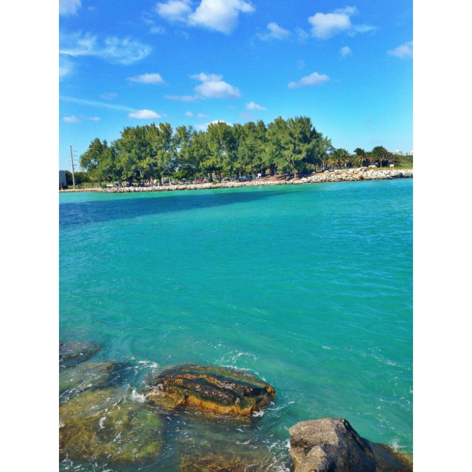

Personal and Professional
Professional
I am currently a social media intern at the University of Florida Hillel, a Jewish organization right off campus across from the Ben Hill Griffin Stadium. I am in charge of the @ufhillel Instagram. I am responsible for posting images with captions almost everyday about various topics and events.

What's Next?!
I hope to use my social media skills in the future after I graduate. I would love to be a social media manager for a sports team or if that doesn't work out, I would not mind finding some area of expertise in media sales/advertising.
Personal
I have many personal interests. My favorite interest is in sports, with a focus on football. I grew up watching/attending football games so it is one of my favorite activites. I like other sports as well and keep up with the latest sports news and scores of games. Add photo of me at sporting event?